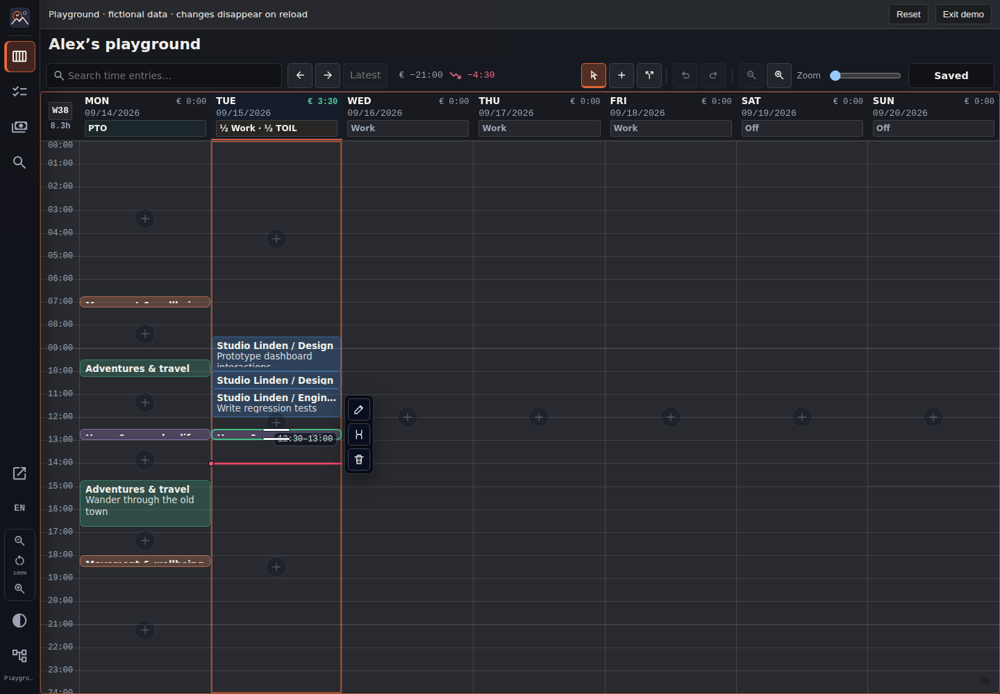
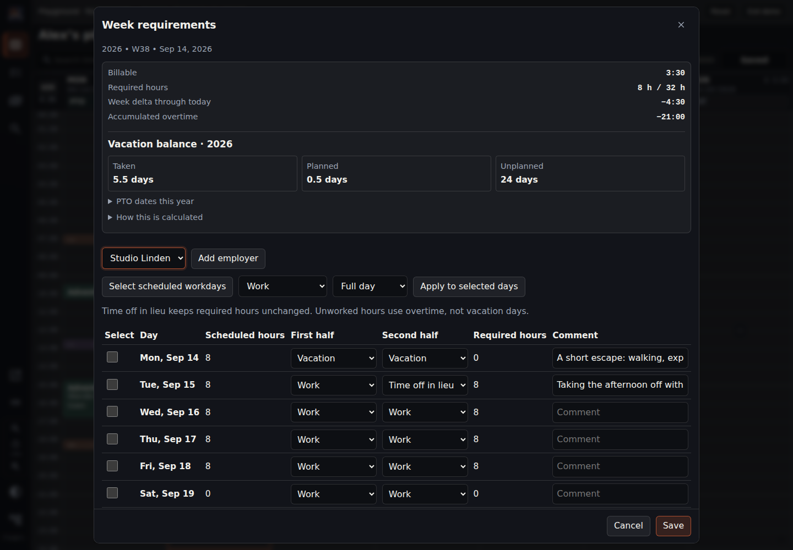
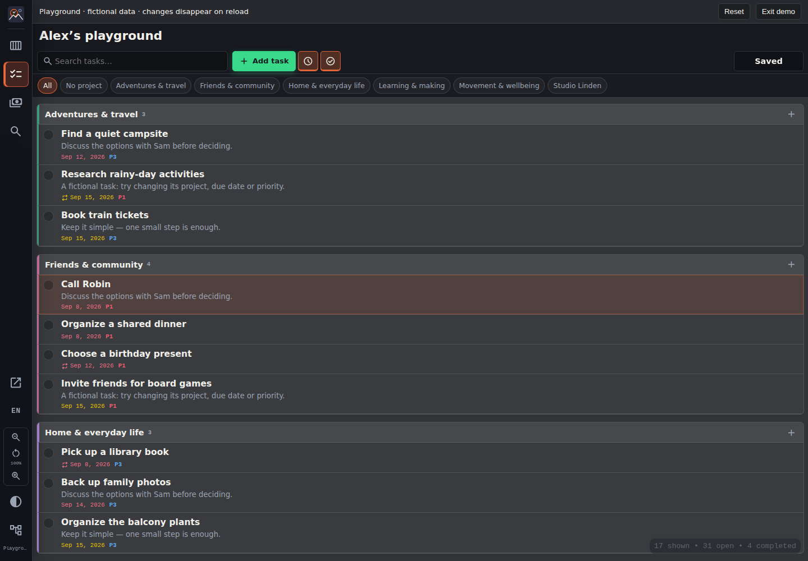
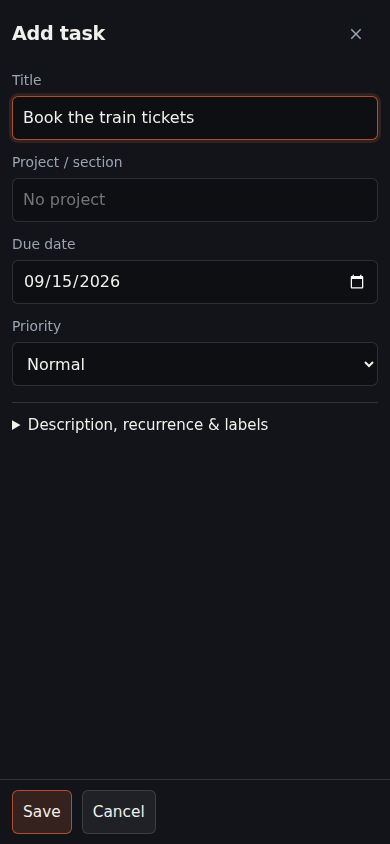
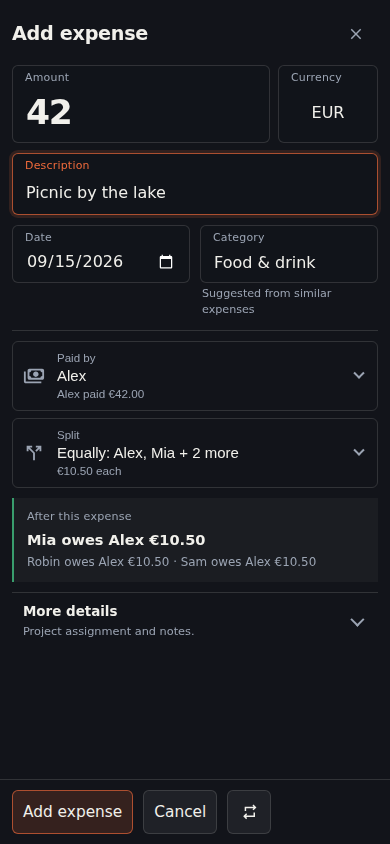
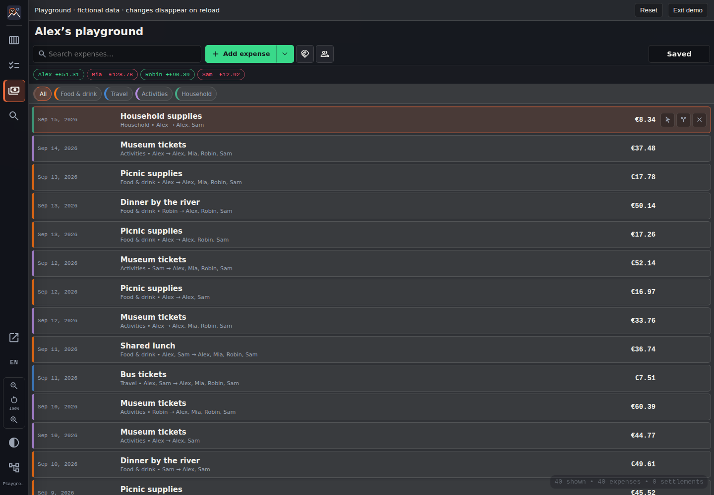

VERSION 1.4
Anleitung
Einrichtung und Bedienung von Arbeitsbereichen, Zeiterfassung, Aufgaben und gemeinsamen Ausgaben.
In der Demo kannst du die Anwendung ohne Repository-Verbindung ausprobieren. Die Daten sind erfunden. Beim Neuladen gehen alle Änderungen verloren, auch wenn du sie zuvor gespeichert hast.
Die Screenshots zeigen die Demo mit englischer Oberfläche. Die Anleitung verwendet die deutschen Bezeichnungen. Namen, Projekte und aktivierte Apps können in deinen Arbeitsbereichen abweichen.
01 · Repository verbinden
Ein Arbeitsbereich ist ein Git-Repository mit deinen Daten und der Konfigurationsdatei zeitberg.json. Du benötigst ein Konto bei einem unterstützten Git-Anbieter, aber kein zusätzliches zeitberg-Konto.
- Wähle auf der Startseite GitHub, Codeberg oder GitLab.
- Prüfe die angeforderten Zugriffsrechte beim Anbieter. GitLab und Codeberg leiten dich nach der Freigabe zu zeitberg zurück. Bei GitHub zeigt zeitberg einen Gerätecode an: Öffne GitHub, gib den Code ein und bestätige die Autorisierung.
- Wähle einen oder mehrere Arbeitsbereiche aus der Repository-Liste und füge die Auswahl hinzu. Bereits verbundene Repositories sind markiert. Oder wähle Arbeitsbereich erstellen: Gib Repository-Namen, Anzeigenamen und Zeitzone an und wähle die Apps. Neue Repositories werden privat angelegt.
- Warte, bis die Einrichtung abgeschlossen ist. Die Oberfläche erscheint, sobald alle konfigurierten Verbindungen geladen wurden oder einen Fehler gemeldet haben.
GitHub: Autorisierung und Installation sind getrennte Schritte
Die Autorisierung stellt fest, mit welchem Konto du angemeldet bist. Die Installation von zeitberg.io legt fest, auf welche Repositories die App zugreifen darf. Über die Aktion zum Erteilen oder Aktualisieren des Repository-Zugriffs kannst du die App installieren oder die Repository-Auswahl ändern. Bei der Rückkehr zu zeitberg startet die Suche erneut. Du kannst die Repository-Liste auch manuell aktualisieren.
Repositories werden im persönlichen Konto erstellt. Dafür benötigt die GitHub-App die Berechtigung Repository creation: Read and write. Falls GitHub eine Berechtigungsaktualisierung anzeigt, musst du diese bestätigen. Die Berechtigung Repository Administration ist dafür nicht erforderlich.
Mein Arbeitsbereich wird nicht gefunden
Die Suche prüft automatisch alle Repository-Seiten. Währenddessen kannst du Ergebnisse filtern und auswählen. GitHub zeigt nur Repositories an, die über deine App-Installationen zugänglich sind, nicht alle Repositories deines Kontos. Prüfe bei fehlenden Einträgen die Repository-Auswahl der Installation.
Deaktiviere den Filter für Arbeitsbereiche, um auch Repositories ohne zeitberg.json im Hauptverzeichnis anzuzeigen. Füge sie hinzu und vervollständige die Konfiguration über Arbeitsbereich bearbeiten. Für einen anderen Branch, einen abweichenden Konfigurationspfad, einen eigenen Server oder einen persönlichen Zugriffstoken (PAT) verwende die benutzerdefinierte Verbindung.
Erstellung fehlgeschlagen oder Name bereits vergeben
Prüfe zunächst die Repository-Liste und aktualisiere sie, statt die Erstellung unter neuen Namen zu wiederholen. Ein Timeout kann auftreten, nachdem der Anbieter das Repository bereits angelegt hat. Wurde nur die Initialisierung unterbrochen, bleibt die Verbindung erhalten: Verbinde sie erneut und schließe die Einrichtung in den Arbeitsbereich-Einstellungen ab. Ein fremdes Repository lässt sich nicht durch Umbenennen in zeitberg übernehmen.
OAuth-Zugriff bei GitLab und Codeberg kann über ein einzelnes Repository hinausgehen. Prüfe die Freigabe beim Anbieter. Alternativ kannst du einen entsprechend eingeschränkten Token über die benutzerdefinierte Verbindung verwenden.
02 · Arbeitsbereiche und Freigaben
Öffne Arbeitsbereiche in der Seitenleiste, um Verbindungen hinzuzufügen, zu bearbeiten, erneut zu verbinden, zu teilen oder zu trennen. Jede Karte zeigt Status, aktivierte Apps und geladene Datenmengen. Beim Start wartet zeitberg, bis jede Verbindung geladen ist oder einen Fehler gemeldet hat; der Fortschritt erscheint pro Arbeitsbereich. Andere Arbeitsbereiche bleiben bei einem Fehler nutzbar. Ein Warnsymbol in der Seitenleiste und auf der betroffenen Karte weist auf das Problem hin.
Wähle eine App in der Seitenleiste. Über den Arbeitsbereich-Titel oben wechselst du zwischen den Arbeitsbereichen, die diese App anbieten. Die Zeiteintragssuche durchsucht standardmäßig alle verbundenen Arbeitsbereiche mit Zeiterfassung. In den erweiterten Suchoptionen kannst du die Auswahl einschränken.
Unter Arbeitsbereich bearbeiten änderst du die Konfiguration und aktivierten Apps. Verbindungseinstellungen wie Repository und Zugangsdaten gelten für diesen Browser. Die gemeinsame Arbeitsbereich-Konfiguration wird dagegen im Repository gespeichert.
| Bedienelement | Funktion |
|---|---|
| Bearbeiten (Stift) | Namen, Zeitzone und aktivierte Apps ändern. Beim Bestätigen wird die gemeinsame Konfiguration gespeichert. |
| Teilen | Einen Link ohne oder mit Zugangsdaten kopieren. |
| Öffnen | Den Arbeitsbereich in einer passenden App öffnen, ohne andere Verbindungen zu trennen. |
| Erneut verbinden (Kreispfeil) | Die Zugangsdaten dieser Verbindung erneuern. |
| Trennen (roter Papierkorb) | Die Verbindung dieses Browsers entfernen, nicht das Repository. |
Die Aufgabenansicht bietet zusätzlich Alle Arbeitsbereiche. Jede Aufgabe behält ihren ursprünglichen Arbeitsbereich; Änderungen werden dort gespeichert. Beim Anlegen wählst du den Arbeitsbereich zusammen mit Projekt und Abschnitt aus. Zeitkalender und Ausgabensalden bleiben pro Arbeitsbereich getrennt.
Link oder QR-Code teilen
Eine normale Ansichts-URL enthält den Navigationszustand, aber keine Zugangsdaten. Ein Capability-Link enthält zusätzlich Zugangsdaten und ermöglicht eine direkte Verbindung. Erstelle ihn über die Teilen-Aktion des Arbeitsbereichs. Eine neue Verbindung kannst du auch durch Einfügen eines Arbeitsbereich-Links oder Scannen seines QR-Codes hinzufügen.
Wenn der Einladungsdienst eingerichtet ist, erstellt Teilen einen kurzen Link, der nach 30 Tagen abläuft. Dein Browser verschlüsselt die Einladung; der Dienst speichert nur verschlüsselte Daten, der Schlüssel bleibt im URL-Fragment. Im Teilen-Dialog desselben Browsers kannst du Einladungen widerrufen. Das verhindert neue Importe, entzieht aber keinen bereits importierten Zugriff. OAuth-Kontoberechtigungen lassen sich so nicht teilen; verwende einen eigenen Repository-Token.
Behandle Capability-Links wie Passwörter. Wer den Link besitzt, kann die Rechte des Tokens nutzen, unter Umständen auch außerhalb dieses Arbeitsbereichs. Teile solche Links nur vertraulich, verwende möglichst eingeschränkte Tokens und widerrufe den Zugriff beim Anbieter, wenn er nicht mehr benötigt wird. Das Trennen einer Verbindung in zeitberg widerruft den Token nicht.
03 · Zeiterfassung und Abwesenheiten
Die Wochenansicht zeigt Zeiteinträge in Tagesspalten. Wähle einen Eintrag aus, um ihn zu bearbeiten, zu teilen, zu löschen oder seine Dauer zu ändern. Ziehe den Inhalt eines Eintrags, um ihn zu verschieben. Über das Plus in einer Lücke legst du einen Eintrag an. Auf schmalen Bildschirmen verschieben die Vor-/Zurück-Schaltflächen den sichtbaren Tagesausschnitt.

Ein Doppelklick oder die Eingabetaste öffnet Zeiten, Beschreibung und Projekt des ausgewählten Eintrags. Die Beschreibung erhält den Fokus; mit Umschalt + Tab erreichst du die Endzeit direkt darüber. Die Vorschläge stammen aus kürzlich verwendeten Beschreibungen. Das Projekt legt fest, ob die Zeit abrechenbar ist. Über die Wochen-/Datumsauswahl springst du zu einem Datum. Der Zeitachsen-Zoom ändert den Stundenmaßstab.
| Taste | Aktion |
|---|---|
| ← / →, ↑ / ↓ | Zwischen Tagen und Einträgen wechseln |
| A / S / Escape | Hinzufügen / Teilen / Normalmodus |
| Eingabe / D | Bearbeiten oder bestätigen / ausgewählten Eintrag löschen |
| Umschalt + ↑ / ↓ | Dauer im Normalmodus ändern |
| Strg + ↑ / ↓ | Eintrag im Normalmodus verschieben; im Hinzufügen-Modus Lücken überspringen |
| Strg + Z / Strg + Y | Rückgängig / wiederholen |
| Strg + K / Strg + G | Suche / Wochenansicht |
| Strg + S | Ausstehende Änderungen speichern |
Einträge dürfen sich nicht überlappen. Bei einer Kollision mit früheren Einträgen werden diese zunächst auf mindestens 15 Minuten verkürzt und anschließend verschoben. Spätere Einträge werden nach hinten verschoben. Änderungen über die Wochengrenze hinaus werden abgelehnt.
Arbeitszeit, Urlaub und Überstunden
Klicke auf die Überstundenanzeige oder die Arbeits-/Abwesenheitsangabe eines Tages. Lege Arbeitgeber und Arbeitszeitmodelle fest und markiere halbe oder ganze Tage als Arbeit, Urlaub, Krankheit, Feiertag oder Gleitzeit. Feiertage werden manuell eingetragen. Nur abrechenbare Zeiteinträge zählen zur geleisteten Arbeitszeit.
Die Differenz der laufenden Woche berücksichtigt die Sollzeit nur bis einschließlich heute. Der Urlaubssaldo unterscheidet für das aktuelle Kalenderjahr zwischen Genommen, Geplant und Ungeplant und berücksichtigt den Übertrag. In der ausklappbaren Urlaubsübersicht stehen die einzelnen Tage.


Beispiel: einen halben Urlaubstag eintragen
- Öffne in der Demo-Wochenansicht die Überstundenanzeige.
- Wähle den Arbeitgeber und einen zukünftigen Tag. Setze eine Tageshälfte auf Urlaub und lasse die andere auf Arbeit.
- Ergänze bei Bedarf einen Kommentar und bestätige. Prüfe anschließend die Tagesangabe sowie geplanten und unverplanten Urlaub im Jahressaldo.
Urlaub verbraucht Urlaubsanspruch. Gleitzeit verrechnet nicht gearbeitete Stunden mit dem Arbeitszeitkonto; sie verbraucht keinen Urlaub. Die Sollzeit bleibt bei Gleitzeit unverändert.
04 · Aufgaben
Öffne die Aufgabenansicht und wähle die grüne Schaltfläche Aufgabe hinzufügen. Das Fälligkeitsdatum ist mit Heute vorbelegt; du kannst es ändern oder leeren. Gib den Titel ein und wähle bei Bedarf Projekt und Abschnitt, Wiederholung oder weitere Angaben.

Der Uhr-Filter zeigt aktuelle und überfällige Aufgaben. Der Haken-Filter blendet erledigte Aufgaben aus. Die Suche oben durchsucht in dieser Ansicht Aufgaben. Bei wiederkehrenden Aufgaben bleibt die Wiederholungsregel nach dem Erledigen erhalten. Erledigen, Bearbeiten und Löschen verwenden dieselbe Speicheranzeige wie Zeiten und Ausgaben.


Warum ist eine Aufgabe nicht mehr sichtbar?
Prüfe zuerst Uhr- und Haken-Filter. Der Filter für aktuelle Aufgaben blendet zukünftige Aufgaben aus; der Filter für offene Aufgaben blendet erledigte aus. Prüfe außerdem Suchtext, Projektfilter und ausgewählten Arbeitsbereich, bevor du von einer gelöschten Aufgabe ausgehst.
05 · Gemeinsame Ausgaben
Für wiederkehrende Einkäufe wähle unten im Ausgabeneditor Als Vorlage speichern. Die Beschreibung wird zum Vorlagennamen. Der Pfeil neben Ausgabe hinzufügen zeigt die Vorlagen dieses Arbeitsbereichs mit Löschschaltflächen. Eine Vorlage öffnet eine neue Ausgabe mit dem heutigen Datum und den gespeicherten Angaben; prüfe sie vor dem Hinzufügen. Vorlagen werden wie andere Änderungen gespeichert und lassen sich rückgängig machen. Sie selbst verändern keine Salden.
Lege im Ausgaben-Arbeitsbereich Beteiligte und Kategorien an. Wähle die grüne Schaltfläche Ausgabe hinzufügen, gib Betrag und Beschreibung ein und prüfe Datum und Kategorie.
Standardmäßig zahlt eine Person, und der Betrag wird gleichmäßig aufgeteilt. Unter Bezahlt von änderst du die zahlende Person oder erfasst mehrere Zahlende. Unter Aufteilung wählst du Beteiligte, feste Beträge, Prozente oder Anteile. Restbeträge helfen, die Aufteilung auszugleichen. Die Währung lässt sich direkt neben dem Betrag ändern. Projektzuordnung und Notizen stehen unter Weitere Angaben.

Prüfe vor dem Bestätigen die Vorschau: Sie erklärt die Verteilung dieser Ausgabe. Die Übersicht zeigt die Gesamtsalden und Ausgleichsvorschläge. Das Bestätigen im Dialog ändert zunächst das lokale Dokument; die gemeinsame Speicherfunktion schreibt es anschließend ins Repository.


Beispiel: 42 € gleichmäßig auf vier Personen aufteilen
- Öffne in der Demo Ausgabe hinzufügen. Gib 42 EUR und als Beschreibung Picknick am See ein.
- Lasse Alex unter Bezahlt von als einzige zahlende Person stehen. Beziehe unter Aufteilung alle vier Personen gleichmäßig ein.
- Prüfe die Vorschau: Der Anteil pro Person beträgt 10,50 €. Die drei anderen Beteiligten schulden Alex jeweils 10,50 €.
- Um eine Person auszuschließen, ändere die Beteiligten unter Aufteilung. Für eine ungleiche Verteilung wähle Prozente, feste Beträge oder Anteile und prüfe den Rest.
Ausgleichsvorschläge zeigen, wie sich die erfassten Salden begleichen lassen. Sie lösen keine Banküberweisung aus. Erfasse einen Ausgleich erst, wenn die tatsächliche Zahlung erfolgt ist.
06 · Speichern und Wiederherstellen
Änderungen speichern bedeutet, dass übernommene Änderungen noch nicht ins Repository geschrieben wurden. Füllstand und Countdown der Schaltfläche zeigen die Zeit bis zum automatischen Speichern: 60 Sekunden nach der letzten Änderung. Jede Änderung, auch Rückgängig oder Wiederholen, startet den Countdown neu. Zum sofortigen Speichern klicke die Schaltfläche oder drücke Strg+S.
Automatisches und manuelles Speichern verwenden denselben Ablauf für alle verbundenen Arbeitsbereiche. Änderungen während eines laufenden Speichervorgangs bleiben für den nächsten Vorgang offen. Eingaben in einem Dialog werden erst beim Bestätigen übernommen. Beim Speichern zu einem Git-Anbieter entsteht ein Commit. Im lokalen Entwicklungsbetrieb werden nur Dateien geschrieben, ohne Commit.
Speichern fehlgeschlagen – was tun?
Lasse den Tab offen und lies die Fehlermeldung. Bei vorübergehenden Fehlern wird das Speichern später erneut versucht. Bei abgelaufenen Zugangsdaten musst du den betroffenen Arbeitsbereich erneut verbinden. Ausstehende Änderungen bleiben als ungespeichert markiert. Neuladen, Trennen oder Löschen von Browserdaten kann diese Änderungen gefährden.
Ungespeicherte Änderungen werden, soweit verfügbar, in IndexedDB zwischengespeichert. Das kann nach einem Neuladen bei der Wiederherstellung helfen, ist aber kein Backup und kein Git-Commit. Wird vor fehlendem Entwurfsspeicher gewarnt, speichere vor dem Verlassen der Seite. Demo-Änderungen werden bewusst nicht dauerhaft gespeichert.
Die Git-Historie enthält den dauerhaft gespeicherten Stand. Rückgängig im Browser gilt für die aktuelle Bearbeitungssitzung und ersetzt nicht das Prüfen oder Wiederherstellen älterer Repository-Commits.
Speicheranzeige
- Änderungen speichern mit Countdown: Änderungen stehen aus. Eine weitere Änderung startet den Countdown neu.
- Speichern läuft: Daten werden geschrieben. Neuere Änderungen bleiben offen und werden nicht vorzeitig als gespeichert markiert.
- Gespeichert: In den geöffneten Arbeitsbereichen stehen keine übernommenen Änderungen mehr aus.
- Fehler oder erneute Verbindung nötig: Prüfe den betroffenen Arbeitsbereich. Schließe die Seite nicht, um die Meldung zu beseitigen.
07 · Datenspeicherung und Zugriff
Die öffentliche Website liefert den Anwendungscode aus. Deine Arbeitsbereich-Daten liegen in den gewählten Repositories und werden direkt über die API des Anbieters gelesen und geschrieben. Repository-Sichtbarkeit und Zugriffsrechte bestimmen, wer die Daten sehen kann, nicht ein unbekannter Link zur Anwendung.
Die GitHub-Geräteautorisierung verwendet einen eingeschränkten HTTPS-Vermittlungsdienst bei Scaleway in Paris, da GitHubs Token-Endpunkte keinen direkten Browserzugriff erlauben. Dieser verarbeitet Gerätecodes und Tokens vorübergehend, aber keine Arbeitsbereich-Dokumente. GitLab und Codeberg verwenden die direkte Browserautorisierung mit PKCE.
Zugangsdaten liegen standardmäßig im Sitzungsspeicher des Browsers. Mit der Option zum Merken werden sie längerfristig gespeichert. Verwende gespeicherte Zugangsdaten nur auf vertrauenswürdigen Geräten; Skripte auf derselben App-Origin können darauf zugreifen. Den Anbieterzugriff kannst du in dessen Einstellungen widerrufen.
Geladene Daten und ungespeicherte Entwürfe können außerdem in IndexedDB liegen. Ein privates Repository schützt nicht vor anderen Personen, die denselben Browser verwenden. Das Löschen der Website-Daten entfernt lokale Zugangsdaten, Zwischenspeicher und Wiederherstellungsentwürfe. Es löscht weder das Repository noch widerruft es den Zugriff beim Anbieter.
Sprache, Darstellung und Zoom
In den Oberflächeneinstellungen der Seitenleiste wählst du Deutsch oder Englisch; daneben wechselst du zwischen hellem und dunklem Design. Die Zoom-Schaltflächen der Seitenleiste skalieren die gesamte App. Der Zoom in der Wochen-Werkzeugleiste verändert nur die Zeitachse. Auf schmalen Bildschirmen füllen Editoren auch bei abweichendem App-Zoom die verfügbare Fläche. Browser-Tastenkürzel können Vorrang vor App-Kürzeln haben; verwende in diesem Fall die sichtbaren Bedienelemente.
Die Repository-README beschreibt Entwicklung, eigenes Hosting und Datenformate auf Englisch. Fehler kannst du in den GitHub Issues melden. Füge keine Tokens oder privaten Arbeitsbereich-Daten bei.